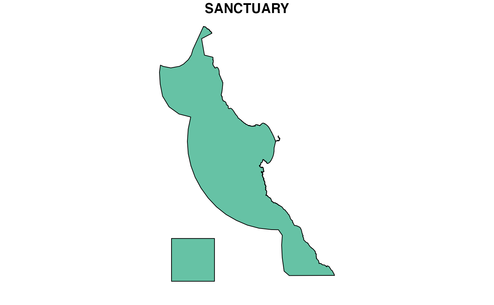
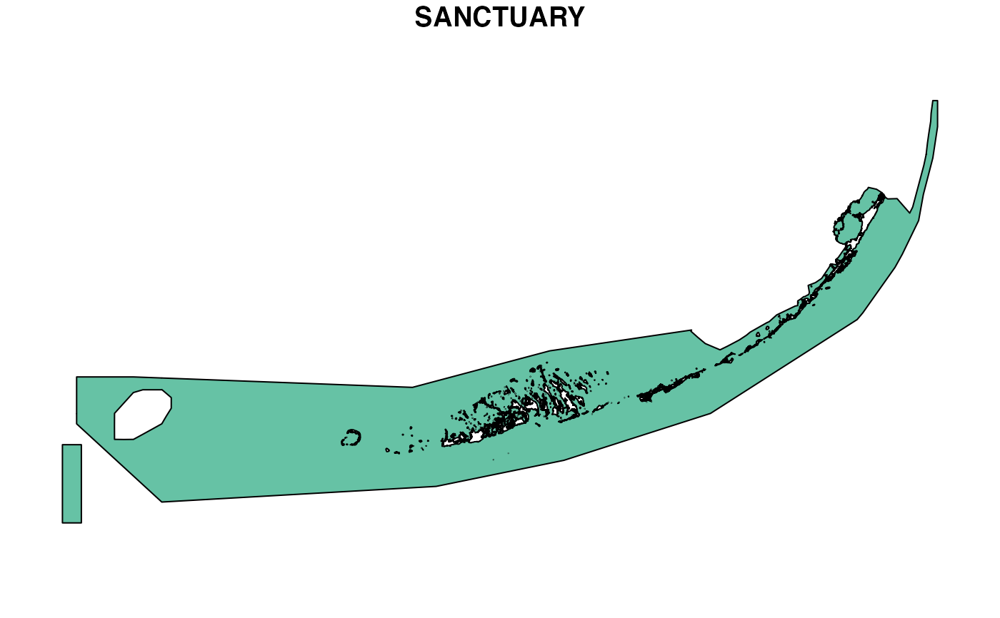

Given a sanctuary code or link (ie URL), download the zip, unzip it, and read first shapefile as a spatial feature. This function was originally designed to pull from one of the zip links found at NOAA Sanctuaries GIS.
get_url_ply( sanctuary = NULL, url = NULL, dir_ply = here::here("data_ss/ply"), verbose = F )
| sanctuary | NOAA Sanctuary code with which to form |
|---|---|
| url | Link from which to fetch a polygon. Originally designed to pull from one of the zip links found at NOAA Sanctuaries GIS. |
| dir_ply | Directory to download locally into. This directory serves as a cache to skip operations if already performed. If zip file exists, skip downloading. If directory to unzip exists, skip unzipping. |
| verbose | Verbose messages describing operations and choices, such as skipping download or unzip and which shapefile used if more than one found. |
Returns a spatial feature sf polygon data frame.
# mbnms: Monterey Bay National Marine Sanctuary ply_mbnms <- get_url_ply(sanctuary = "mbnms") ply_mbnms#> Simple feature collection with 1 feature and 8 fields #> geometry type: MULTIPOLYGON #> dimension: XY #> bbox: xmin: -123.1401 ymin: 35.5 xmax: -121.1036 ymax: 37.88163 #> geographic CRS: WGS 84#> #> #>#> # A tibble: 1 x 9 #> SANCTUARY DATUM POLY_ID AREA_KM AREA_SM AREA_NM AREA_ACRES Area2013Mi #> * <chr> <chr> <dbl> <dbl> <dbl> <dbl> <dbl> <dbl> #> 1 MBNMS NAD … 1 15783. 6094. 4602. 3900060. 8505. #> # … with 1 more variable: geometry <MULTIPOLYGON [°]># fknms: Florida Keys National Marine Sanctuary ply_fknms <- get_url_ply(sanctuary = "fknms") ply_fknms#> Simple feature collection with 1 feature and 8 fields #> geometry type: MULTIPOLYGON #> dimension: XY #> bbox: xmin: -83.14989 ymin: 24.30041 xmax: -80.06647 ymax: 25.65046 #> geographic CRS: WGS 84 #> # A tibble: 1 x 9 #> SANCTUARY DATUM AREA_NAME POLY_ID AREA_KM AREA_NM AREA_SM AREA_ACRES #> * <chr> <chr> <chr> <int> <dbl> <dbl> <dbl> <dbl> #> 1 FKNMS NAD … FKNMS 0 9850. 2872. 3803. 2433879. #> # … with 1 more variable: geometry <MULTIPOLYGON [°]>